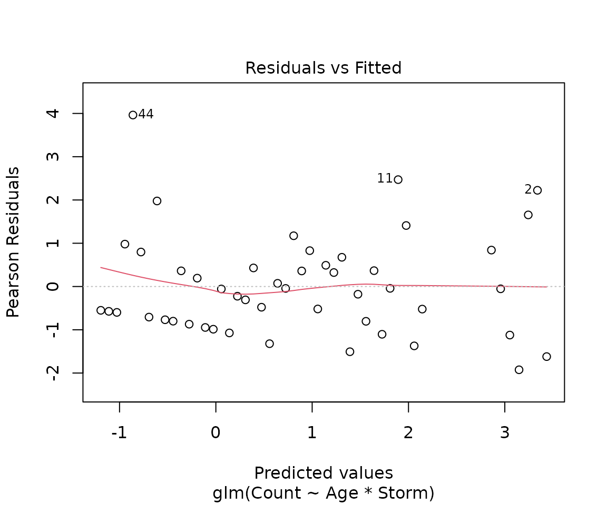
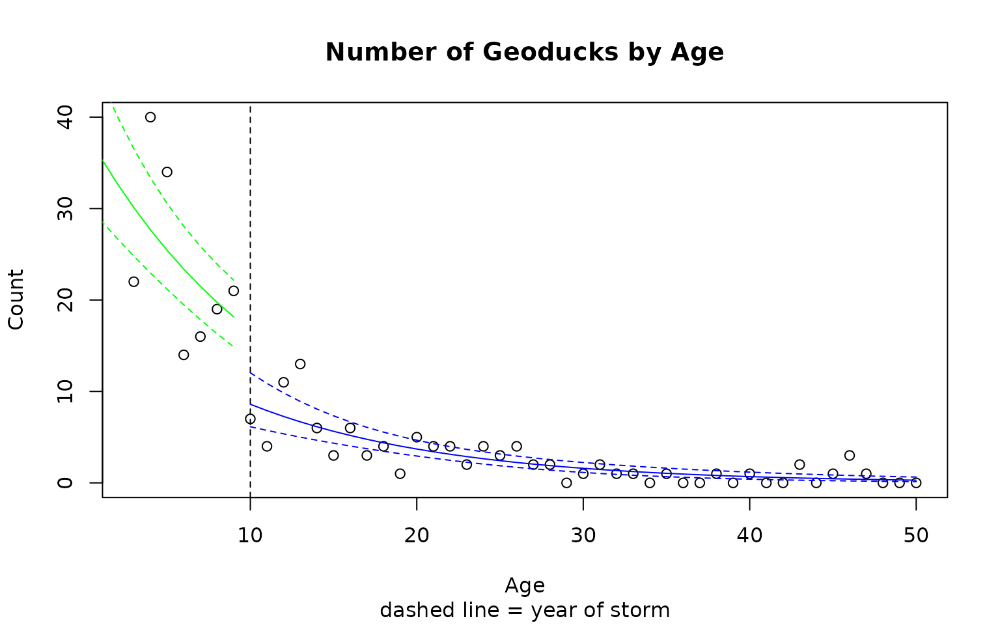

Case Study 14.4: STATS 201/8 Extra Case Study - Poisson GLM. Parallel Curves
Source:vignettes/articles/CS14_4.Rmd
CS14_4.RmdQuestion 1
A marine scientist was interested in modelling the population of geoducks from the west coast of the North Island taking into account their age and an extreme storm event 10 years before. A random sample of geoducks (a big clam, the name is actually pronounced “gooey-duck”) was taken off the west coast of a North Island surf beach in 2013. Each geoduck was aged by counting rings in the shell, and the count of geoduck at each age was recorded. The population theory of geoducks suggests using the following model for the expected count at each age:
Here, we’ll be using a modified version of this model since there was as extreme storm event that all geoduck of age 10 or older experienced. The initial model to be fitted includes the storm effect and its interaction with age in the following way:
where is the geoduck count at age i and is an indicator variable that takes the value 0 if age is less than 10, or 1 if age is at least 10.
The data are stored in Geoduck.csv, which contains the following variables:
| Variable | Description |
|---|---|
| Count | Number of geoducks counted at given value of age. |
| Age | Years of age of geoduck. |
| Storm | Indicator variable (0 if age less than 10 after storm, or 1 if age at least 10 before storm). |
Instructions:
- Comment on the plot of the data.
- Fit an appropriate Poisson GLM to model the number of geoducks. Determine whether the model can be simplified and determine an appropriate final model. Generate confidence interval output for this model.
- Write appropriate Methods and Assumption Checks.
- Write an appropriate Executive Summary. Remember to address all the questions asked.
- Bonus Produce predicted values for the expected number of geoducks at each age group using this model, including intervals. Add these intervals to a plot of the data.
Questions of Interest
The questions we want answered are: how does the population of geoducks change with age, did the storm event have any impact on the population, and did the relationship between age and the population count change after the storm?
Comment on plot.
The scatter plot shows an exponential (i.e., multiplicative) decline in geoduck count with age. There is some indication of a storm effect at age 10, but it is hard to be sure.
Fit an appropriate GLM:

summary(duckfit1)##
## Call:
## glm(formula = Count ~ Age * Storm, family = poisson, data = Geoduck.df)
##
## Coefficients:
## Estimate Std. Error z value Pr(>|z|)
## (Intercept) 3.72147 0.23386 15.913 <2e-16 ***
## Age -0.09560 0.03925 -2.436 0.0149 *
## Storm -0.74423 0.33266 -2.237 0.0253 *
## Age:Storm 0.01216 0.04068 0.299 0.7650
## ---
## Signif. codes: 0 '***' 0.001 '**' 0.01 '*' 0.05 '.' 0.1 ' ' 1
##
## (Dispersion parameter for poisson family taken to be 1)
##
## Null deviance: 458.589 on 47 degrees of freedom
## Residual deviance: 60.985 on 44 degrees of freedom
## AIC: 189.51
##
## Number of Fisher Scoring iterations: 5
1 - pchisq(60.985, 44)## [1] 0.04567957
# Evidence of overdispersion
duckfit2 = glm(Count ~ Age * Storm, family = quasipoisson, data = Geoduck.df)
summary(duckfit2)##
## Call:
## glm(formula = Count ~ Age * Storm, family = quasipoisson, data = Geoduck.df)
##
## Coefficients:
## Estimate Std. Error t value Pr(>|t|)
## (Intercept) 3.72147 0.28203 13.195 <2e-16 ***
## Age -0.09560 0.04734 -2.020 0.0495 *
## Storm -0.74423 0.40118 -1.855 0.0703 .
## Age:Storm 0.01216 0.04906 0.248 0.8054
## ---
## Signif. codes: 0 '***' 0.001 '**' 0.01 '*' 0.05 '.' 0.1 ' ' 1
##
## (Dispersion parameter for quasipoisson family taken to be 1.454374)
##
## Null deviance: 458.589 on 47 degrees of freedom
## Residual deviance: 60.985 on 44 degrees of freedom
## AIC: NA
##
## Number of Fisher Scoring iterations: 5
# Drop interaction
duckfit3 = glm(Count ~ Age + Storm, family = quasipoisson, data = Geoduck.df)
summary(duckfit3)##
## Call:
## glm(formula = Count ~ Age + Storm, family = quasipoisson, data = Geoduck.df)
##
## Coefficients:
## Estimate Std. Error t value Pr(>|t|)
## (Intercept) 3.65761 0.11672 31.338 < 2e-16 ***
## Age -0.08428 0.01243 -6.782 2.15e-08 ***
## Storm -0.66339 0.23351 -2.841 0.00673 **
## ---
## Signif. codes: 0 '***' 0.001 '**' 0.01 '*' 0.05 '.' 0.1 ' ' 1
##
## (Dispersion parameter for quasipoisson family taken to be 1.438666)
##
## Null deviance: 458.589 on 47 degrees of freedom
## Residual deviance: 61.075 on 45 degrees of freedom
## AIC: NA
##
## Number of Fisher Scoring iterations: 5## Waiting for profiling to be done...## 2.5 % 97.5 %
## (Intercept) 30.7695824 48.6534515
## Age 0.8961418 0.9409958
## Storm 0.3233277 0.8086895## Waiting for profiling to be done...## 2.5 % 97.5 %
## Age -10.38582 -5.900423
## Storm -67.66723 -19.131046Method and Assumption Checks
A Poisson log-linear model was fitted to the geoduck counts. The explanatory variables were Age and an indicator variable for the storm event. The initial model included interaction. Residuals looked fine but there was evidence that over–dispersion was present (P-value = 0.0457) so the model was refitted as quasipoisson, The interaction term was not significant and so was removed. After this, both Age and Storm were significant so the model was not simplified any further.
The Age and Storm effects were significant and the final model was
where is the count of geoduck of age geoduck and has an overdispersed distribution with mean . is an indicator variable that takes the value 0 if age is less than 10 years (before the storm) and 1 if 10 or more.
Note 1: this is not a Poisson distribution in this case as we used a QuasiPoisson model.)
Note 2: could use for as have the same definition.
Executive Summary
We want to model the population of geoducks from the west coast of the North Island taking into account their age and an extreme storm event 10 years prior to the sample being taken.
Both age and the storm event have a significant effect on expected count of geoduck. However, there was no evidence that the relationship between age and the expected count of geoducks differed for geoducks born before and after the storm.
For every year increase in age (notwithstanding the storm event), the expected count of geoduck decreases by between 5.9% and 10.4%.
For any age class of geoducks old enough to be affected by the storm, there was a further decrease in their expected count of between 19.1% and 67.7%.
Produce predicted values for the expected number of geoducks at each age group using this model, including intervals. Add these intervals to a plot of the data.
# Create predictions for geoducks age less than 10, after the storm
Pred.data1 = data.frame(Age = seq(1, 9), Storm = rep(0, 9))
PredAfter = predict20x(duckfit3, Pred.data1, print.out = FALSE)$frame
PredAfter## Predicted Conf.lower Conf.upper
## 1 35.635 28.743 44.180
## 2 32.755 26.734 40.132
## 3 30.107 24.806 36.541
## 4 27.674 22.956 33.361
## 5 25.437 21.179 30.550
## 6 23.381 19.478 28.066
## 7 21.491 17.855 25.867
## 8 19.754 16.317 23.914
## 9 18.157 14.870 22.171
# Create predictions for geoducks age 10 or more, before the storm but don't display these.
Pred.data2 = data.frame(Age = seq(10, 50), Storm = rep(1, 41))
PredBefore = predict20x(duckfit3, Pred.data2, print.out = FALSE)$frame
# Redo plot from above.
plot(Count ~ Age,
main = "Number of Geoducks by Age",
sub = "dashed line = year of storm", data = Geoduck.df
)
abline(v = 10, lty = 2)
# Add after lines to plot.Interval bounds as dashed lines.
lines(seq(1, 9), PredAfter[, 1], col = "Green")
lines(seq(1, 9), PredAfter[, 2], col = "Green", lty = 2)
lines(seq(1, 9), PredAfter[, 3], col = "Green", lty = 2)
# Add before lines to plot.Interval bounds as dashed lines.
lines(seq(10, 50), PredBefore[, 1], col = "Blue")
lines(seq(10, 50), PredBefore[, 2], col = "Blue", lty = 2)
lines(seq(10, 50), PredBefore[, 3], col = "Blue", lty = 2)